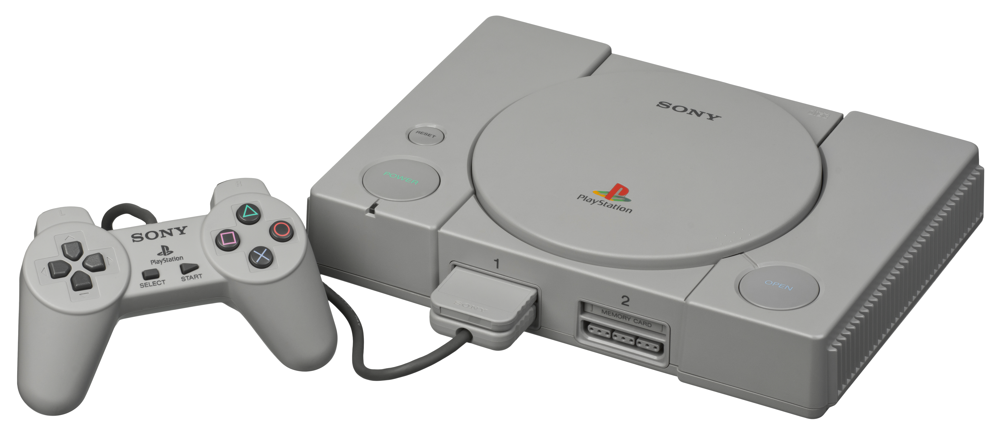
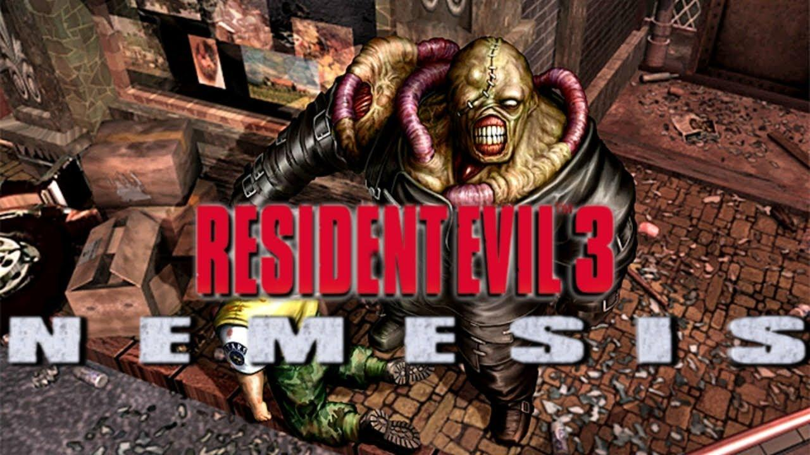
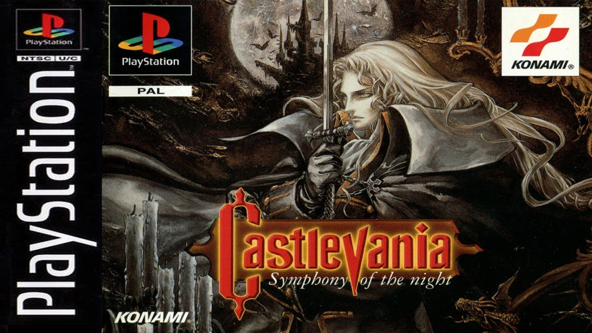
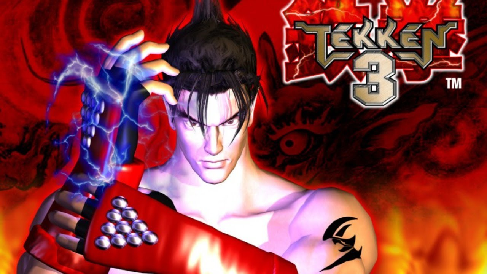
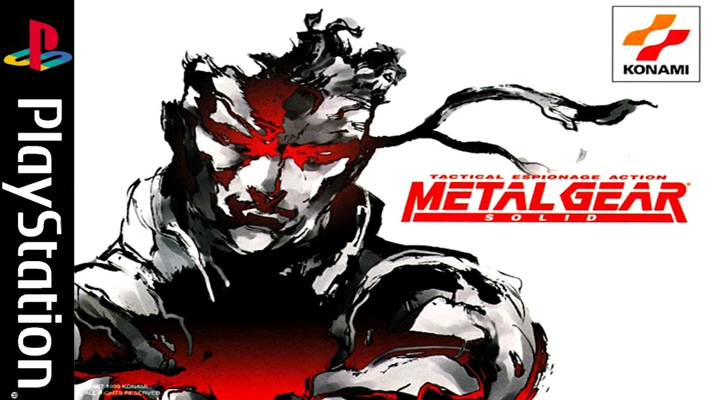
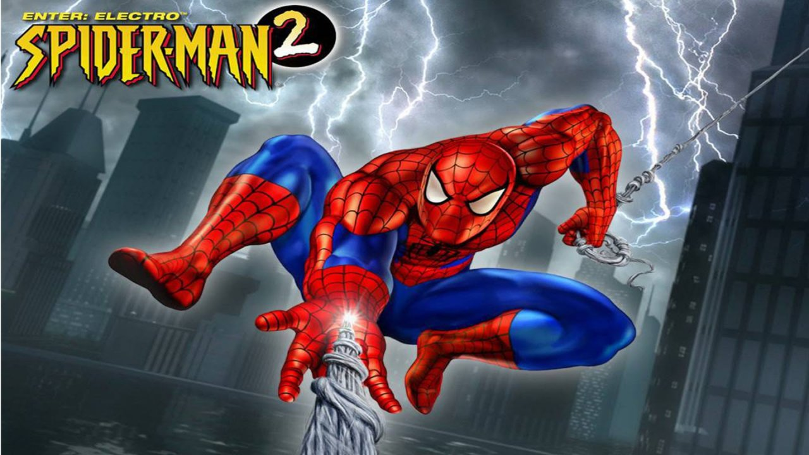

Playstation One (5º geração)
Lançamento: 1994 (Japão), 1995 (Estados Unidos)
Se passando antes e após os acontecimentos de Resident Evil 2, Resident Evil 3 foi um sucesso crítico e comercial, vendendo mais de três milhões de unidades em todo o mundo. Nemesis é considerado por muitos até hoje como o vilão mais aterrorizante dos games.
Música escolhida: Free From Fear
Resident Evil 3
Lançamento: 1999
Crash Bandicoot
Lançamento: 1996
Crash Bandicoot é um divertido e excelente jogo em plataforma 3D. recebendo críticas positivas, Crash foi considerado por muito tempo o principal mascote do Playstation.
Música escolhida: Crash Bandicoot Theme
Sendo a sequência direta de Castlevania: Rondo of Blood, Symphony of the Night foi uma obra importante para a série Castlevania, recebendo ampla aclamação crítica e posteriormente aparecendo em listas de melhores jogos de todos os tempos. O mesmo levou a série a um novo patamar.
Música escolhida: Dracula's Castle
Castlevania Symphony of the Night
Lançamento: 1997
Tekken 3
Lançamento: 1998
Com mais de 8 milhões de cópias vendidas no mundo inteiro, Tekken 3 é citado como um dos maiores jogos de luta de todos os tempos. Sendo a franquia uma das pioneiras dos jogos de luta em 3D.
Música escolhida: Opening Movie
Metal Gear Solid é considerado um dos melhores e mais importantes jogos de todos os tempos, afinal, Hideo Kojima (diretor e escritor do game) é uma das mentes mais criativas do mundo dos videogames. O game é muitas vezes descrito como o jogo que ajudou a popularizar o género stealth.
Música escolhida: Metal Gear Solid - Menu Theme
Metal Gear Solid
Lançamento: 1998
Spider-Man 2
Lançamento: 2001
Tanto o primero quanto o segundo Spider Man são jogos excelentes. Graças a perspectiva em 3D dessa geração, foi possível fazer com que o jogador finalmente usasse o Web Swing do teioso com uma imersividade praticamente perfeita para tal época.
Música escolhida: Spider Man 2 - Menu Theme